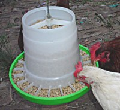

COPYRIGHT Tim Lovett © 2004
.
.
.
LABOR SAVING FOOD FEEDING METHODS
The dispensing of grains is somewhat simpler - any form of hopper that delivers the food as it is eaten. The example below shows pellets loaded into the hopper and chickens feeding from the tray at the bottom. The main objective is to keep the animals from fouling their food - chickens will not eat pellets that have been trodden into manure. This design relies on the average frictional properties and shape of the pellets to prevent product cascading over the edge of the tray. There are limits to how tall the hopper can get before the weight would cause the food to jam. However, chickens are adept at picking so it would be no problem for them.

Since the operation of this type of dispenser is dependent on the bulk flow properties of the grain, a larger unit may need an adjustable throat. By altering the gap between hopper and tray, the flow of grain could be eased or restricted. This might come in handy for a taller hopper, changes of feed, or changes of environmental conditions (humidity). However, the unit above always works with just about anything. This unit feeds 3 chickens for approximately 3 days if all are laying.
Pottery could also be employed for feed hoppers of small to medium size. Larger units would more naturally be constructed in timber.